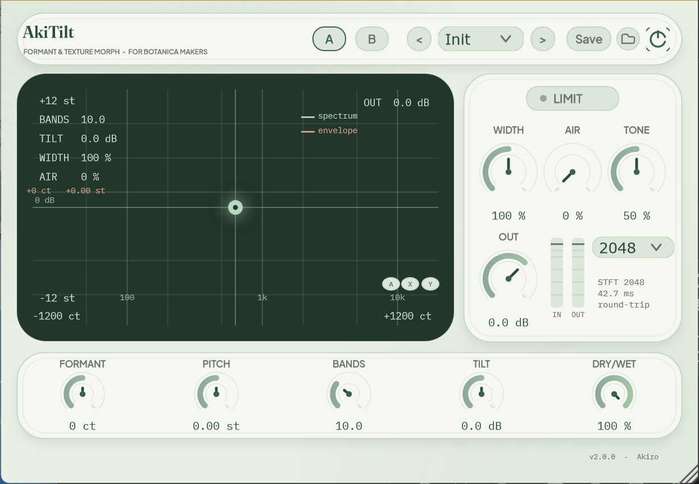

Spectral formant engine
Shifts the spectral envelope ±1200 ct without changing pitch — the spectral approach used by Color Transfer-style shifters.
Formant & texture morph for Botanica (petalcore) makers — shift the spectral envelope without losing the note.
AkiTilt grew out of how producers in the Botanica scene shape voices and textures: automating formant on guitar loops, morphing voices into new characters, tuning noise into air. A JUCE 8 plugin styled with the Mint Fresh theme of the Aki Design System.
Shifts the spectral envelope ±1200 ct without changing pitch — the spectral approach used by Color Transfer-style shifters.
Tracks input pitch and shifts formants with it; the knob becomes a fine offset for expressive rides.
Pitch (±12 st granular), tilt EQ (±12 dB), mid/side width and an Air noise bed in one panel.
Formant × pitch XY pad with live spectrum display, plus 9 factory presets and plain-XML user presets.
Instant A/B compare, in/out level meters and full host automation with latency reporting.
Bands 0–32 and FFT size 128–4096 — trade latency for formant smoothness to fit the material.

| Module | Range | What it does |
|---|---|---|
| Formant | ±1200 ct | Shifts the spectral envelope without changing pitch |
| Auto Formant | on/off | Tracks input pitch; knob becomes a fine offset |
| Bands | 0–32 | Spectral-envelope analysis resolution |
| Pitch | ±12 st | Granular pitch shift, decoupled from formant |
| Tilt | ±12 dB | One-knob brightness tilt with loudness compensation |
| Width | 0–200 % | Mid/side stereo widening on the wet path |
| Air + Tone | 0–100 % | Filtered noise bed, warm hiss to open air |
| Out | −24…+12 dB | Output trim into a soft tanh limiter |
| FFT Size | 128–4096 | Analysis window: latency vs. formant smoothness |
git clone --depth 1 --branch 8.0.8 \ https://github.com/juce-framework/JUCE.git libs/JUCE cmake -S . -B build -G "Visual Studio 17 2022" -A x64 cmake --build build --config Release # release/AkiTilt.vst3 — fresh copy on every build
“Grow timbres, don't just tweak them.”
AkiTilt 源自 Botanica 场景制作人对人声与质感的处理方式：在吉他循环上自动化共振峰、把人声变形为新的角色、把噪声调校成空气感。基于 JUCE 8 构建，采用 Aki 设计系统的 Mint Fresh 主题。
在不改变音高的前提下移动频谱包络 ±1200 ct，采用 Color Transfer 一类工具的频谱方案。
跟随输入音高同步移动共振峰，旋钮变为微调偏移，方便自动化演奏。
Pitch（±12 st 粒度移调）、Tilt EQ（±12 dB）、mid/side 宽度与 Air 噪声床，一屏齐备。
共振峰 × 音高 XY 控制板带实时频谱，内置 9 个出厂预设与纯 XML 用户预设。
A/B 即时对比、输入输出电平表与完整宿主自动化，含延迟上报。
Bands 0–32 与 FFT 128–4096，在延迟与共振峰平滑度之间按素材取舍。
| 模块 | 范围 | 作用 |
|---|---|---|
| Formant | ±1200 ct | 在不改变音高的前提下移动频谱包络 |
| Auto Formant | on/off | 跟随输入音高，旋钮变为微调偏移 |
| Bands | 0–32 | 频谱包络分析分辨率 |
| Pitch | ±12 st | 粒度音高移调，与共振峰解耦 |
| Tilt | ±12 dB | 单旋钮明暗倾斜，带响度补偿 |
| Width | 0–200 % | 湿信号 mid/side 立体声加宽 |
| Air + Tone | 0–100 % | 滤波噪声床，从暖嘶声到开阔空气感 |
| Out | −24…+12 dB | 输出微调，进入软 tanh 限制器 |
| FFT Size | 128–4096 | 分析窗长：延迟与共振峰平滑度的取舍 |
git clone --depth 1 --branch 8.0.8 \ https://github.com/juce-framework/JUCE.git libs/JUCE cmake -S . -B build -G "Visual Studio 17 2022" -A x64 cmake --build build --config Release # release/AkiTilt.vst3 — fresh copy on every build